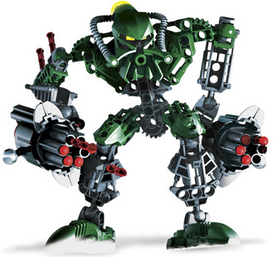
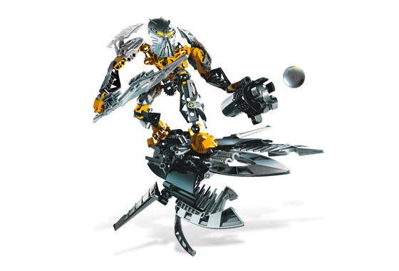

This is a 2007 set Kongu, toa-mahri. As I recall this was the first Bionicle set I ever got. It was released in 2007 as a part of Toa-Mahri. Every year Lego was experimenting with different gimmicks and play-features in sets, new feature of 2007 line was so called cordak blasters. Kongu’s defying features were that he was shorter than other sets of this year, and was equipped with two cordak blasters, instead of one. In Childhood I had way too much fun shooting from those blasters, and no fun collecting the bullets after.

Toa-Ignika is a 2008 so called titan set (titan set means that it was significantly bigger than usual sets). it features a Toa-Ignika on top of a sky board, which had a lot of details and movable parts. The Toa had nothing extra ordinary in its design, beside notorious mask and the main play feature of 2008 line of Bionicle sets Midak skyblaster. In childhood I had a lot of fun building the set, especially the sky board, as it was taking a lot from other original Lego franchise, Lego technic, which is entirely centered around complicated and detailed mechanisms. Although this set is pretty good, the main downside is the Midak blaster, as it is simply too powerful and easy to harm people around, but mostly myself.